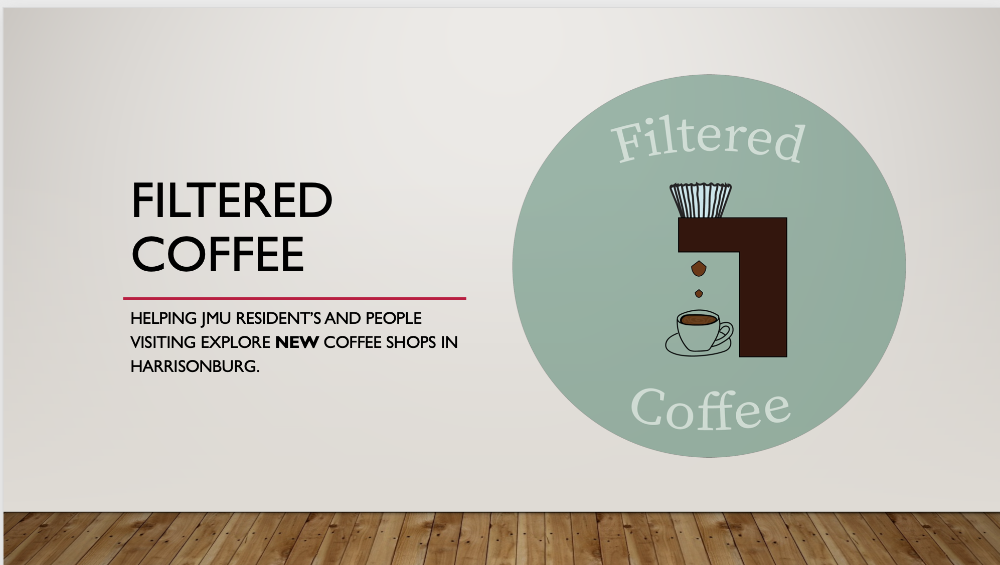

First project
For my first UX project, I designed the foundations of a coffee shop for users in Harrisonburg. I created this design my sophomore year of college in my first User Design class at JMU. I went through the initial research process by interviewing seven users, building a card sort to measure how the users think about the content, and compiling the data to get the base of a potential app. I then created six design requirements and 2 personas to build a narrative for this app.

Web Designs
Java Joint Website
This was my final project for my Interactive Design course I took my junior year. For the assignment we could design a website based off any idea using Sublime and Bootstrap. I chose to design a website for a coffee shop, Java Joint. I also designed all the accopanying graphics including the logo. The website was then published to Github pages.